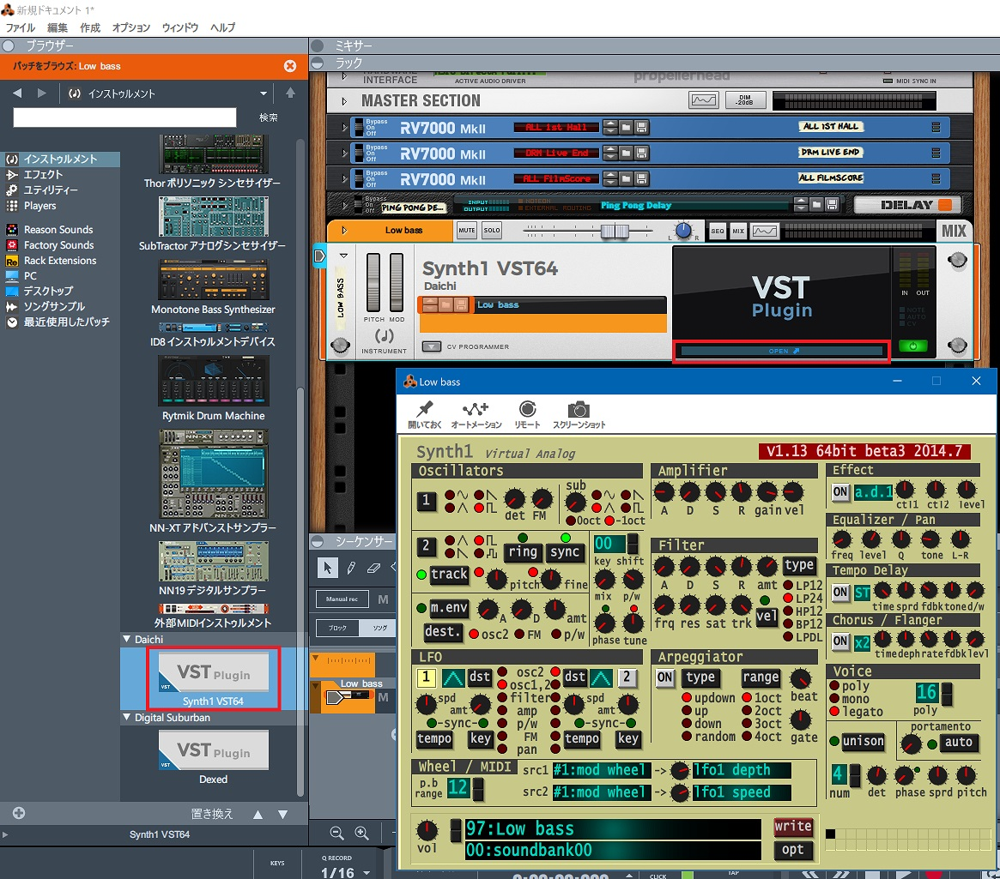

Reason Lite 10 に Synth1 を入れてみる
昨日の記事では Reason Lite 10 に Dexed という VST プラグインを導入したが、今日は Synth1 というプラグインを入れてみる。
Clavia Nord Lead 2 というシンセの再現らしい。
上のサイトから Synth1V113beta3.zip をダウンロード・解凍したら、initsettings.exe を実行する。最初から zipbank/ にプリセット等も入っていたのでとりあえずこのまま実行。
そしたら Synth1 VST64.dll を C:\Program Files\Steinberg\VSTPlugins\Synth1 VST64.dll に配置する。すると、Dexed と同じ要領で Synth1 が Reason Lite 10 上に追加された。

ザ・シンセって感じの音がして面白い。昔持ってたオモチャのシンセキーボードでこんな音が出せたなーみたいなのもあって懐かしさがある。ｗ